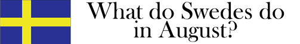

(English
blow!)
Kamrat!
Tur i oturen så
drabbas kraephtor inte av lågkonjunktur!
Anslut oss för
en härlig sammankomst där vi lemlestar mindre djur utan varken päls
eller själ, och en och annan tandläkare.
Nytt för i år!
*** Thomas Sörenssen
har (kanske)
lovat att köra dragspelssolo! ***
*** Larz Haikolaz
spelar in hösten framåt småtimmarna! ***
Som vanligt. Du vet borren.
Vi ses på Minerva, runt kvällen sådär, på FrEdAG!.

*Join the
fucking game with public shame!*
Let's eat some nasty delicious animals and party like it's 1998 again!
Elm's apartment as usual. Studentvägen 1, floor 3, Ronneby.